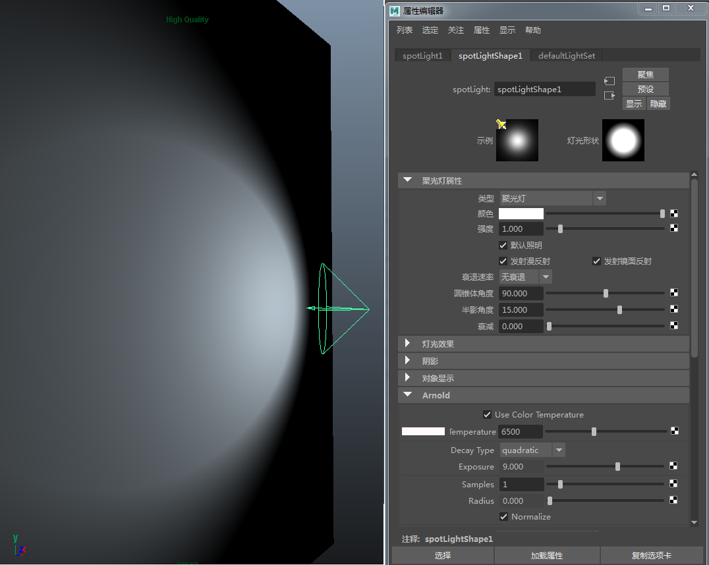
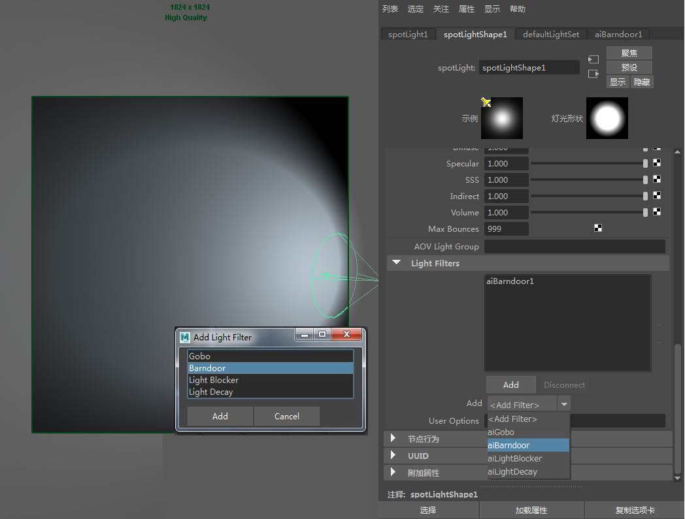

创建一个 spot_light 和一个多边形平面。将该聚光灯指向该平面。增加“圆锥体角度”(Cone Angle)，以便可以看到灯光的效果。按 7（“照明 > 使用所有灯光”(Lighting > Use All Lights)）并启用“高质量渲染”(High Quality Rendering)，以便在视口中更好地呈现聚光灯。

在聚光灯的属性编辑器中，向下滚动到“Arnold”，然后在“灯光过滤器”(Light Filters)下，单击“添加”(Add)。此时应显示包含各种 Arnold 灯光过滤器的菜单。单击“挡光板”(Barndoor)，然后单击“添加”(Add)。这将自动在聚光灯和挡光板过滤器之间建立连接。现在，应该能够在灯光过滤器列表中看到该过滤器。双击该过滤器以在属性编辑器中查看其属性。

在聚光灯的 Arnold 属性中创建 Ai 挡光板
开始调整某些挡光板翻板前，请在挡光板的属性编辑器中创建一个预设，并将其命名为 Ai Barndoor_default。之后将能够恢复 Ai 挡光板的默认预设值，以便更轻松地测试不同的值。然后为渲染摄影机创建 IPR 渲染。